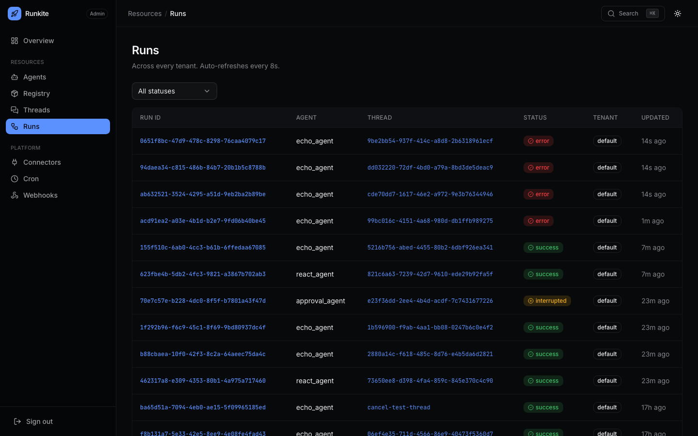

Operate
Runner auth
Runners are not Admin keys and not client API keys. They authenticate to the plane with per-kind tokens so only authorized fleets can pull jobs.
What it is
Set RUNNER_TOKEN_<kind> on the control plane (single token or comma-separated allow-list for rotation).
Runners present RUNNER_TOKEN. Optional RUNNER_TENANTS_<kind> restricts tenants on unbound internal routes.
Why it is here
When client auth is on, an open runner channel would bypass the story. Serve fail-closes unless every tokenized kind has a tenant list (use default for single-tenant).
How to implement
- Choose kinds matching your runners (e.g. python-langgraph, typescript-langgraphjs).
- Generate tokens; set plane env + runner env; restart plane after allow-list changes.
- Set
RUNNER_TENANTS_*when client auth is enabled. - Confirm jobs flow: create a run, watch its streamed execution, then verify its durable success in Admin → Runs.
- Rotate by appending a new token to the allow-list, rolling runners, then removing the old.
# Control plane (illustrative) export RUNNER_TOKEN_PYTHON_LANGGRAPH="tok_a,tok_b" export RUNNER_TENANTS_PYTHON_LANGGRAPH="default,acme" # Runner export RUNNER_TOKEN="tok_b"
In the product

Assignment identity protocol 1 (v0.10.0)
Matching v0.10.0 planes and runners require assignment_identity_version: 1 on GetJob and WatchCancels before work is delivered. Bound HTTP sends X-Runkite-Run-Incarnation with the existing run-ID header and X-Runkite-Generation. Events, status and heartbeat RPCs echo the same original-record identity. Missing or mismatched proof cannot inherit the current assignment's authority.
The exact tuple is (run_id, run_incarnation_id, generation). Reclaim preserves incarnation and advances generation; a replacement record gets a different incarnation. Events and cancellation are record-scoped. Fleet tokens and workload-owner checks still authorize the caller. The identity is not a bearer secret, attestation or exactly-once business-effect guarantee. Mongo uses its ObjectID privately and does not gain SQL-only public references, governance or durable usage.
Back up database, queue and receipts, stop submissions/cron dispatch, and drain all workers and writers. Apply Postgres/SQLite migration 23 or MySQL migration 24 with runkite db upgrade, then deploy matching planes, workers and custom stores before traffic resumes. Startup also migrates; mixed old/new writers are unsupported. SQL accounting and holds bind atomically to the original record, and terminal-hook claims use a record key. Legacy unbound accounting, bare hook claims and same-ID receipts stay intact and can block finalization. Reconcile them explicitly and use fresh operation IDs for intentional new work; do not erase or backfill evidence to force execution. Downgrade requires a reviewed backup restore and accounting reconciliation. Older packages retain their release contract; use matching v0.10.0 artifacts for this upgrade. See the upgrade procedure and engineering contract and qualification limits.
Kind and attempt binding
Since v0.5.6, token authentication binds the runner kind on the server context.
GetJob and WatchCancels reject a different requested kind;
heartbeat, event and completion calls must match the in-flight run's kind.
Local mode without runner tokens remains explicitly trusted.
Tokens identify a fleet kind rather than individual pods. Every run-specific call
must also echo the assignment generation. Generation 0 matches only
an actual generation-zero assignment, so older/custom runners that omit the field
must upgrade for current positive-generation jobs. v0.10.0 also requires capability 1 and original-record echoes as described above.
What to expect
- Not for Admin login: pasting a runner token into Admin fails.
- Run-binding: v0.10.0 connector/store proxy calls need exact run ID, original record identity and generation; tenant comes from the verified assignment.
- Next: credentials map, production day-0, ops.
Separately credentialed execution pools (v0.7.0)
Operator-defined execution_pools select an exact framework kind, tenant set and agent set. Each uses a distinct RUNNER_TOKEN_POOL_<NAME>; a worker selects --execution-pool or RUNKITE_EXECUTION_POOL with its matching token. Broader framework/tenant credentials do not widen pool authority. A pool is trusted fleet routing, not hostile-code isolation. See the external workload boundary.
Verified workload holders (v0.8.0)
The v0.8.0 TypeScript HTTP client includes Node 22 compatibility for custom CA and client-certificate requests. An older build failing with UND_ERR_INVALID_ARG and invalid onRequestStart method needs the runner transport fix. Keep HTTPS and certificate verification enabled. See the design and regression record.
Optional RUNKITE_WORKLOAD_IDENTITY=mtls binds a verified external certificate's URI SAN, public key and expiry to each assignment. The existing fleet token still applies. An operator allowlist maps exact SPIFFE URIs to runner kinds or pools; sharing a service URI does not let a peer with a different key use the active assignment.
TypeScript gRPC TLS on Node.js 26 or newer requires a DNS endpoint with a matching certificate DNS SAN. The current gRPC client sends IP literals as SNI, which Node.js 26 rejects. Runkite reports that configuration error before polling; HTTPS IP addresses with matching IP SANs are unaffected.
Both direct HTTP and gRPC listeners must verify client certificates. SQL state with Redis or inprocess queues is supported; other backends fail startup. Certificate-owned runs use proxy storage and checkpoints. Direct SQL and forwarded identity headers are outside this boundary. Because the current HTTP listener is shared, client and Admin callers also need accepted certificates.
Drain and replace every replica before enabling this profile. Use short-lived certificates, distinct keys and the same credential on both runner transports. Drain/reclaim before rotating the original certificate. The optional denied_key_sha256 list retires one key after every replica is replaced/drained with the updated file; editing it alone is not live revocation. Expiry and permanent owner denials stop renewal and signal cooperative cancellation; they do not isolate arbitrary code or undo effects. Read the configuration and engineering design.